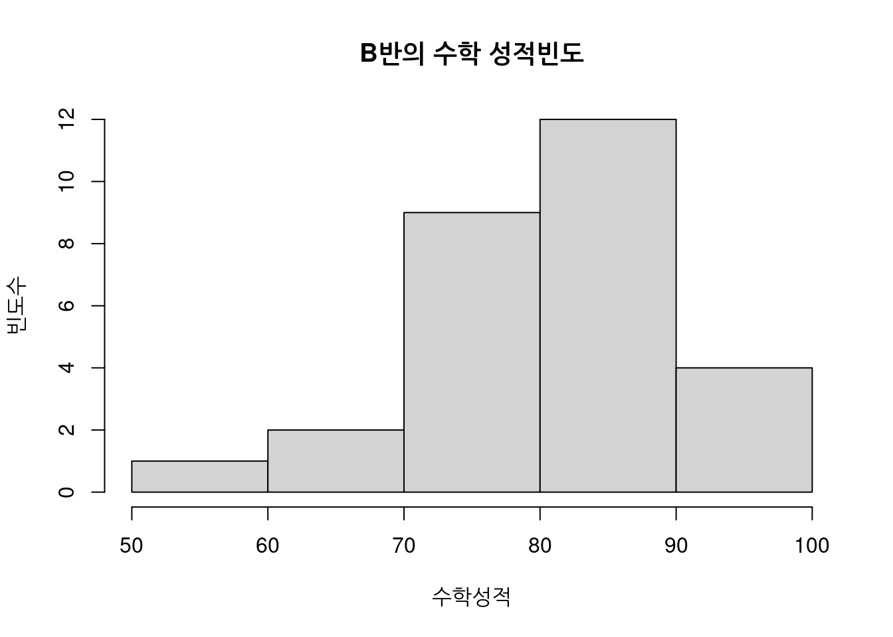

math_score = c(88, 86, 92, 65, 72, 75, 81, 84, 85, 93, 99, 50, 78, 80, 86, 76, 74, 95, 81, 87, 90, 72, 76, 61, 85, 84, 78, 83)03 빈도수를 이용한 보통 중학 B반의 수학성적 분석
보통중학교 B반 선생님이 학부모 회의를 준비하고 있습니다.
학부모에게 B반의 학급성적을 다른학급의 성적과 비교하며 정보를 제공하고 싶습니다.
선생님은 여기서 도수분포표(빈도표:frequency table)와 히스토그램을 사용하기로 하였습니다.
도수(빈도:Frequency)
(빈)도수(빈도:Frequency)는 :
- 어떤 일이 얼마나 자주 발생하는지에 대한 척도입니다.
도수분포표(빈도표:Frequency table)는 :
- 데이터 값이 얼마나 자주 발생하는지 측정하고 시각적으로 표시하는데 사용합니다.
선생님은 다음과 같은 순서로 자료를 정리하고 표를 만들어 학부모에게 공개하였습니다.
1. 데이터의 수집 : 어떤것을 분석할 것인가?
수학성적을 백분율로 계산하여 정리하였습니다.
선생님은 이렇게 정리한 자료(데이터:data)를 시각적으로 보여주면 좋겠다고 생각핬습니다.
2. 데이터의 분류 : 구분하여 분류 (계급:interval)
성적을 구분하여 등급(grade)을 매깁니다.
90-100%는 A
80-89%는 B
70-79%는 C
60-69%는 D
0-59%는 F 여기서 계급의 수(Number of class)는 A,B,C,D,F 5개가 되는 것을 알 수 있습니다.
3. 표를 통해 시각화
성적과 등급을 시각적으로 표현하기 위해 (빈)도수분포표(빈도표:frequency table)을 만들 것입니다.
첫째, 주어진 범위에서 득점한 각 학생에 대해 집계를 x로 표시합니다. 빈도표는 X를 사용하여 표현해보겠습니다. 간격(interval)은 지정한 등급을 구간으로 하여 표현합니다.
등급의 빈도표
| 간격 | Tally(집계) |빈도 |
|------|-------------|-----|
|90-100|xxxxx | 5 |
|80-89 |xxxxxxxxxxxx | 12 |
|70-79 |xxxxxxxx | 8 |
|60-69 |xx | 2 |
|0 -59 |x | 1 |이 집계표는 학급에서 각 범위의 점수를 받은 학생수를 부모에게 전달할 수 있다는 점에서 유용합니다. 자녀가 B를 받았다면 대부분 학생들이 받은 점수 범주에 속한다는 것을 알 수 있습니다.
히스토그램 그래프를 만들어서 표현
다음으로 그는 히스토그램을 만들었습니다.
- x축과 y축을 이용해 데이터를 표시하는 점에서 막대그래프와 비슷합니다.
- 히스토그램은 그래프사이에 간격이 없고 막대사이에 간격이 동일합니다.
이 간격은 도수분포표의 계급(간격:interval)과 같습니다.
#breaks는 계급의 수(Number of class) 입니다.
hist(math_score, breaks=5, main="B반의 수학 성적빈도", xlab= "수학성적", ylab="빈도수")
히스토그램은 도수분포표(빈도표:frequency table)와 동일한 정보를 표현합니다.
그래프 이므로 좀 더 알아보기 쉽겠지요?
히스토그램을 분석
B반은 B등급(80-90)이 가장 많은 것을 알 수 있습니다.
학생 대부분은 B,C등급에 포함됨을 알 수 있고 학부모는 자녀가 보편적인지 아닌지의 여부를 금방 알 수 있을 것입니다.
- 하지만 특정등급에 있다고 하여 어떤 판단을 하기엔 어려울 것입니다.
그래서 선생님은 다른 학급들의 성적 빈도수를 작성하고자 한것이고 그것과 비교하여 줌으로써 수학 문제 수준이나 성적수준을 보고난다면 여러가지 상황판단 및 대응이 가능할 것입니다.